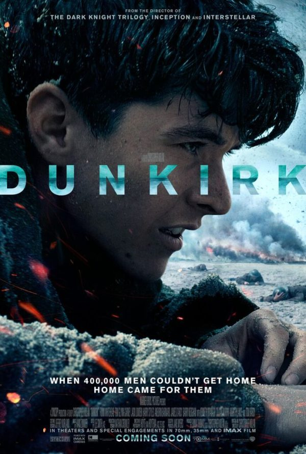
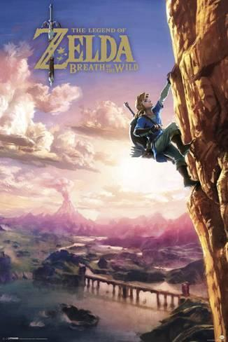
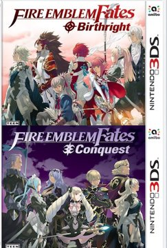
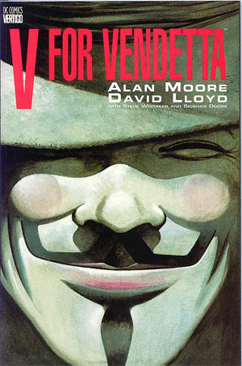
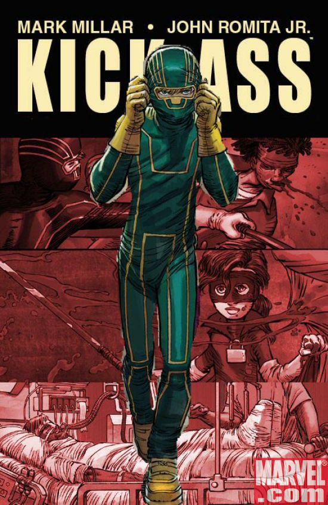
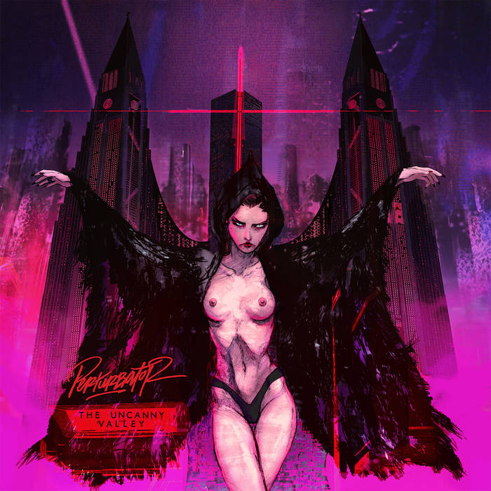

Films
Dunkirk

Released: 21st July 2017
Director: Christopher Nolan
Starring: Fionn Whitehead, Mark Rylance
Truly a film where the "edge of your seat" cliché is
meant literally. As the film progressed I genuinely
found myself sitting up and inching forward, in no
small part thanks to Hans Zimmer's incredible score.
I've seen some criticism calling the out-of-order storytelling
unnecessary but I disagree, the movie would
not be nearly as intense if that central dogfight wasn't taking
place the entire time.
Spider-Man: Homecoming

Released: 5th July 2017
Director: Jon Watts
Starring: Tom Holland, Michael Keaton
I really enjoyed this movie as I was watching it, but
then immediately felt a bit underwhelmed by it as soon
as I left the cinema. It may well be one of the best Spider-Man
movies, but at the end of the day it suffers from feeling like
both "just another Spider-Man movie" and "just another
Marvel movie".
Games
Zelda: Breath of the Wild

Released: 3rd March 2017
Genre: Open World Adventure
Played on: Nintendo Switch
As a longtime Legend of Zelda fan, I was very excited
for Breath of the Wild but also quite sceptical of the
praise it was receiving. However as the game unfolded
I became increasingly captivated by it.
Don't let the colourful art style deceive
you - this is arguably the most realistic game I've ever played.
Almost every element behaves how you would expect it to in the real world.
Maybe not my favourite Zelda game only for its minimal story,
but it certainly comes close.
Fire Emblem: Fates

Released: 20th May 2016
Genre: Strategy RPG
Platform: Nintendo 3DS
I adore Fire Emblem. There's no other series of games
where defeat is so crushing, or victory is such a relief.
Fire Emblem Fates is actually split across three games,
which I enjoy slowly making my way through, a few chapters at
a time, often during a long journey. I'm currently near the
end of Revelation, the final game and though Fates doesn't
quite reach the heights of other entries, it is holding
me over until the upcoming Fire Emblem: Three Houses on
Switch.
Graphic Novels
V For Vendetta

Released: September 1988 – May 1989
Author: Alan Moore
Illustrator: David Lloyd
Watching the film before reading one of Alan Moore's
books is often a dangerous way to play it. Thankfully
then, the film adaptation told the story in a
very different way to the book, allowing me to
enjoy the read without constantly discovering
how the film missed the point. Like other Alan
Moore works I have read, V for Vendetta was an outstanding,
exciting story filled with harrowing similarities to
the real world. Powerful stuff that really makes you
think. I strongly recommend it.
Kick-Ass

Released: February 2008 - February 2010
Author: Mark Millar
Illustrated by: John Romita Jr.
Kick-Ass is, in a word, awesome. I don't think I've
ever seen gory violence in a comic book on this level.
Occasionally I'll watch a movie or TV show and a
particularly hard punch will make me gasp, but never
a comic book. That is until Kick-Ass. John Romita Jr's
cinematic artwork executes the level of violence Mark
Millar was aiming for perfectly. The book is also genuinely
funny, and has some unexpected twists. Though short,
this book is a lot of fun and well worth a read.
Albums
TRUTHR

Artist: Henry Homesweet (?)
Released: 15th July 2017
Favourite Track: Earth II
It's not really clear whether Tom Sherlock is back
as Henry Homesweet, or whether TRUTHR is his new
alias as well as the EP title. Regardless of what the
artist calls himself, TRUTHR is a very impressive
collection of tracks. In particular Earth II,
which has such excellent sound design that it's
hard to believe it was made using a Commodore 64's
sound chip. The only weak point of the album in my
opinion is the second track, Chem Moon. Although I
enjoy it, it doesn't really fit with the summery vibe
of the rest of the EP.
The Uncanny Valley

Artist: PERTURBATOR
Released: 6th May 2016
Favourite Track: Venger
I've only recently discovered PERTURBATOR's music,
and I think I'm becoming slightly addicted to it.
It's genre is probably best categorised as darkwave,
and it paints the picture of a horror/sci-fi future
from an 80s movie, but does so with a modern brush.
It's captivating, thrilling and is perfect for
bombing down the motorway in the dead of night.